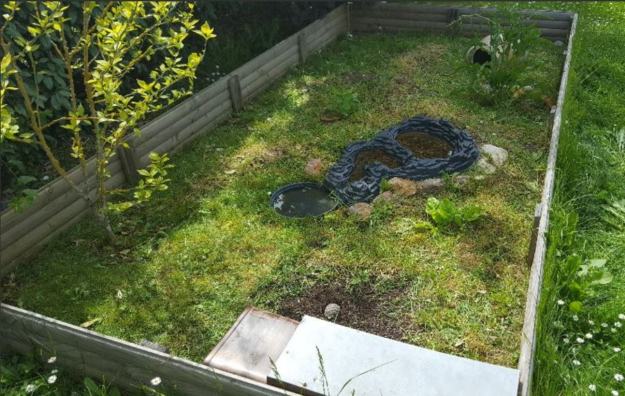

Petite présentation
Les tortues d'Hermann sont à l'origine des animaux sauvages donc elles sont adaptées pour vivre dehors. Bien sûr si le climat et les températures de votre région le permettent, c'est-à-dire environ 5°C l'hiver et 25°C et plus en journée d'été, vous pouvez donc les faire vivre dans un enclos extérieur. On rappelle qu'à l'état sauvage elles vivent dans un climat méditerranéen donc plus le climat de votre région est proche de ce dernier mieux c'est!
Pour faire vivre votre tortue dehors il va absolument falloir lui construire un enclos.Cet enclos lui permettra d'être à l'abri des prédateurs et pour vous d'être sûr de ne pas perdre votre tortue. Le placement de l'enclos est primordial, privilégiez un endroit ensoleillé avec une petite partie à l'ombre. Ce dernier, devra faire au minimun 7 m² par individu ou 10m² minimun si l'individu est seul.
Niveau aménagement, votre enclos doit comporter une source d'eau où votre tortue pourra se rafraichir et boire et plusieurs cachettes pour que votre tortue se sente en sécurité et puisse s'abriter en cas de pluie. De plus, il est conseillé pour le sol de votre enclos de créer deux parties. Une partie végétale faite de mauvaises herbes (comme du pissenlit, du plantin et du trèfle) et des plantes diverses comme des fraisiers, de l'oseille ou un altéa (l'altéa produit des fleurs excellentes pour la santé de votre tortue) qui servira de garde-manger et une deuxième partie plus terreuse qui servira de coin de détente.Attention, il faut continuer de nourrir votre tortue même si la végétation est abondante pour lui offrir une alimentation variée. Par ailleurs assurez-vous que la hauteur de votre enclos soit suffisamment importante pour éviter les évasions (au moins 3 fois la longueur de votre tortue).De plus, évitez de mettre des pierres ou un tas de terre près des bords de l'enclos pour ne pas faciliter l'évasion de votre tortue. Il est aussi préférable de recouvrir l'enclos avec un filet ou du grillage pour éviter les problèmes avec les oiseaux.Par ailleurs, si votre spécimen est de petite taille ne remplissez pas trop le point d'eau pour prévenir contre les risques de noyade.
Voici notre enclos à Tortues:
Pour la réalisation de notre enclos nous avons utilisé :
- Un bassin cascade avec une coupelle d'eau pour la source d'eau Le Bassin -- https://amzn.to/2LwyWXp & L'Abreuvoir -- https://amzn.to/2LwzdcT
- Une jarre et des pots de fleurs pour les cachettes Maison tortues -- https://amzn.to/2T7zdnM
- Des pierres d'ornement
- Un altéa (le petit arbre)
- Un fraisier, un plant d'oseille, un plant d'épinard (les mauvaises herbes (type pissenlit) poussent toutes seules) Sachet de 75 g de graines à faire germer pour Tortues -- https://amzn.to/3bEOuTw
- Des planches de bois
- Une fondation de béton (20cm)